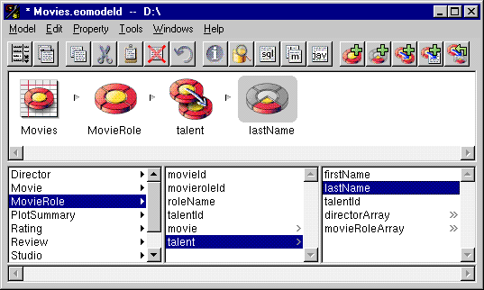
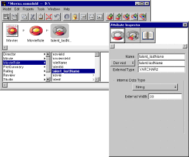
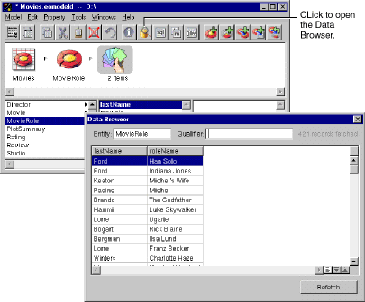

Table of Contents
Table of Contents  Previous Section
Previous Section
For example, to add the name of an actor to MovieRole, you can traverse a talent relationship (which represents MovieRole's relationship to Talent) and add the actor's last name (lastName) to MovieRole as a flattened attribute. This is a contrived example, because in this case it would be better to use a key path than to flatten an attribute.
 Flatten Property.
Flatten Property.

Figure 30. Adding a Flattened Attribute
Alternatively, you can use the button in the toolbar.
The derived attribute (in this example, talent_lastName) appears in the list of properties for MovieRole. The format of the name reflects the traversal path: the attribute lastName is added to MovieRole by traversing the talent relationship.

Figure 31. Examining a Flattened Attribute in the Attribute Inspector
In the Attribute Inspector, the pop-up list to the left of the Definition field identifies the attribute as "Derived".
The Definition field (the second text field from the top of the Attribute Inspector) must accurately reflect the attribute's external name and the table in which it resides. For example, if you edit its text to be "Name" and change its mode to "Column," it no longer maps to an existing attribute. In other words, only edit this field if you are sure you can predict the outcome.
To display this flattened attribute, use the Data Browser.
To select multiple, non-contiguous attributes in the Model Editor on Windows NT, hold down the Control key while you click on each attribute. On Rhapsody, use the Shift key.

Figure 32. Using the Data Browser to Check Your Model
 Next Section
Next Section